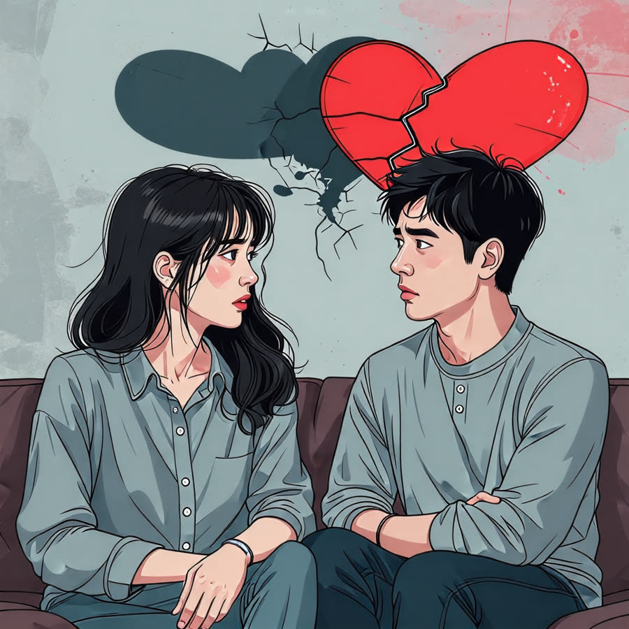

행복한 부부 관계를 위한 필수 팁 공개, 갈등을 피하는 5가지 비법!
안녕하세요, 생각공작소 입니다 :)
많은 사람들이 가족 다음으로
서로를 가장 잘 알고 있다고 생각하는 커플들이 많습니다.
하지만, 그 편안함 속에서 종종 친구처럼,
때때로 남매 같은 기분이 들기도 합니다.
이렇게 익숙해진 관계는 때로는
부부 간의 갈등을 유발할 수 있습니다.😣
오늘은 부부 및 커플 관계에서의 심리적 변화와 갈등의 원인,
그리고 이를 극복하는 방법에 대해 살펴보겠습니다.
서로의 마음을 이해하고, 건강한 관계를 유지하는 데 도움이 되는 팁을 함께 알아보아요. !
부부 및 커플 관계의 심리적 변화
시간이 지남에 따라,
연인 시절의 애틋함이 점차 이기적인 마음으로 변할 수 있습니다.
서로에 대한 배려가 줄어들고,
상대방에게 자신의 욕구를 강요하게 되는 경우가 많습니다.
이런 변화를 이해하는 것이 매우 중요합니다. !

갈등의 원인
1. 상대에게 맞추기 강요하기
상대방에게 내가 원하는 대로 행동해 달라고 요구하는 것은
관계에 큰 부담을 줄 수 있습니다.
이러한 강요는 서로의 기대를 충족하지 못할 때 실망감으로 이어져,
결국 갈등의 씨앗이 될 수 있습니다.
2. 부담감 주기
친구들에게 연인을 소개할 때,
상대방이 항상 완벽해야 한다는 압박감은 관계에 긴장감을 더합니다.
이로 인해 상대방은 자신을 숨기게 되고,
결국 서로의 진정한 모습을 이해하지 못하는 상황이 발생할 수 있습니다.
3. 솔직함의 역설
오랜 시간 함께하다 보면 편안함이 생기지만,
이로 인해 서로에 대한 배려가 줄어드는 경우가 많습니다.
이때, 상대방의 단점이나 민감한 부분을 솔직하게 드러내게 되어
상처를 주는 말이 나올 수 있습니다.
이러한 솔직함이 때로는 관계의 균열을 초래할 수 있습니다.
갈등 해결 방법
갈등을 해결하려면 상대방을 이해하고,
서로의 다름을 인정해야 합니다.
갈등이 생겼을 때, 이기기 위한 싸움이 아닌,
협력하여 문제를 해결하는 자세가 필요합니다.
긍정적인 표현
"나는 네가 00하는 게 싫어!" 대신
"나는 네가 00해 주면 좋겠어." 와 같은 방식으로 대화하면
상대방에게 긍정적인 영향을 줄 수 있습니다.
경청의 중요성
상대방의 이야기를 진심으로 듣고 반응하는 것이 중요합니다.
"그랬구나" 같은 반응은 서로의 이해를 돕습니다.
전문가의 도움
갈등 해결 방법이 항상 적용되기 어려울 수 있습니다.
이럴 때는 가까운 심리상담센터를 방문해 전문가의 도움을 받는 것도 좋은 방법입니다.
서로의 다름을 인정하고, 이해하는 과정을 통해 행복한 관계를 유지할 수 있습니다.
인천시 남동구, 연수구, 미추홀구, 서구 에 위치한 #심리상담센터 로
전연령층과 전직종을 대상으로 #심리상담 을 도와주는 곳입니다. :)
평생을 미술치료와 심리상담에 종사하신 소장님과
실력과 경험 많은 상담사들이 당신을 기다리고 있습니다.
더욱 자세한 정보는 문의를 통해 확인해주세요 :)
T. 032-277-2007